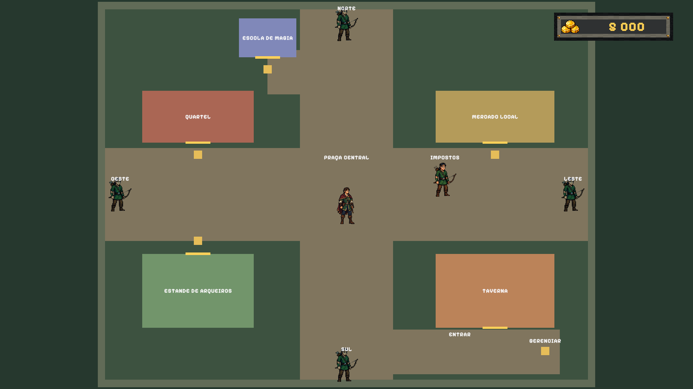
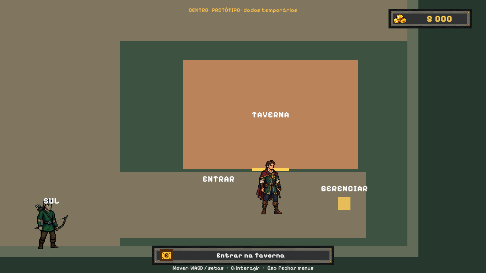
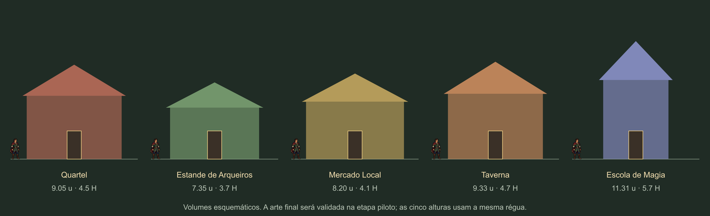

Centro — o dobro de área
Revisão de escala solicitada: área total do mapa e base das construções duplicadas. Largura e comprimento aumentam cerca de 41,4%. O tamanho do jogador, as portas e o alcance das interações permanecem iguais.
Validação: 1/1 teste funcional passou na escala revisada, incluindo medidas, circulação, serviços, saídas e ida/volta da Taverna. A partida salva e as cenas de produção foram preservadas. As capturas externas foram atualizadas para revisão.
| Referência | Anterior | Atual |
|---|
| Mapa | 26 × 20 u | 36,77 × 28,28 u |
| Área do mapa | 520 u² | 1.040 u² |
| Base da Taverna | 6,4 × 4 u | 9,05 × 5,66 u |
| Altura do jogador | ~2 u | ~2 u |
| Porta de referência | 2,7 × 1,35 u | 2,7 × 1,35 u |
Instruções para testar no Unity · Registro da entrega · Conferência das áreas
Comparação da planta jogável
As duas visões gerais enquadram o mapa inteiro. A câmera de jogo mantém o mesmo zoom da versão anterior.

Anterior: mapa de 520 u². Atual: mapa de 1.040 u², com jogador na mesma escala física.
Atual: mapa de 1.040 u², com jogador na mesma escala física.Construção em relação ao jogador

Taverna anterior. Base com o dobro de área. Mesmo jogador e mesmo zoom de jogo.
Base com o dobro de área. Mesmo jogador e mesmo zoom de jogo.Ver a planta dimensionada
 Posições e rotas ampliadas pelo fator √2. A folga de colisão continua baseada no corpo real.
Posições e rotas ampliadas pelo fator √2. A folga de colisão continua baseada no corpo real.Ver a régua das futuras fachadas

Alturas e larguras dos volumes maiores; jogador e portas mantêm suas dimensões. A arte final ainda será produzida.Para testar, abra Assets → Scenes → Prototypes → CentroLayoutPrototype e dê Play. A alteração continua na cópia isolada, com dados temporários.